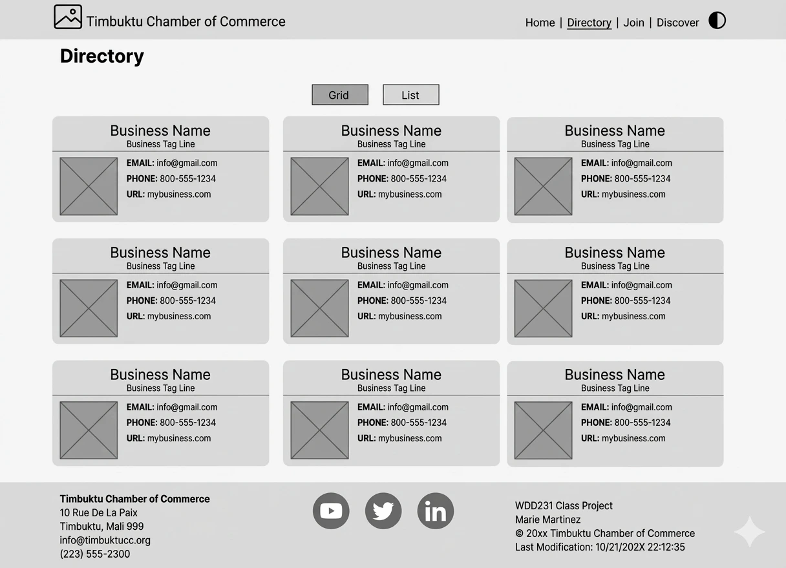
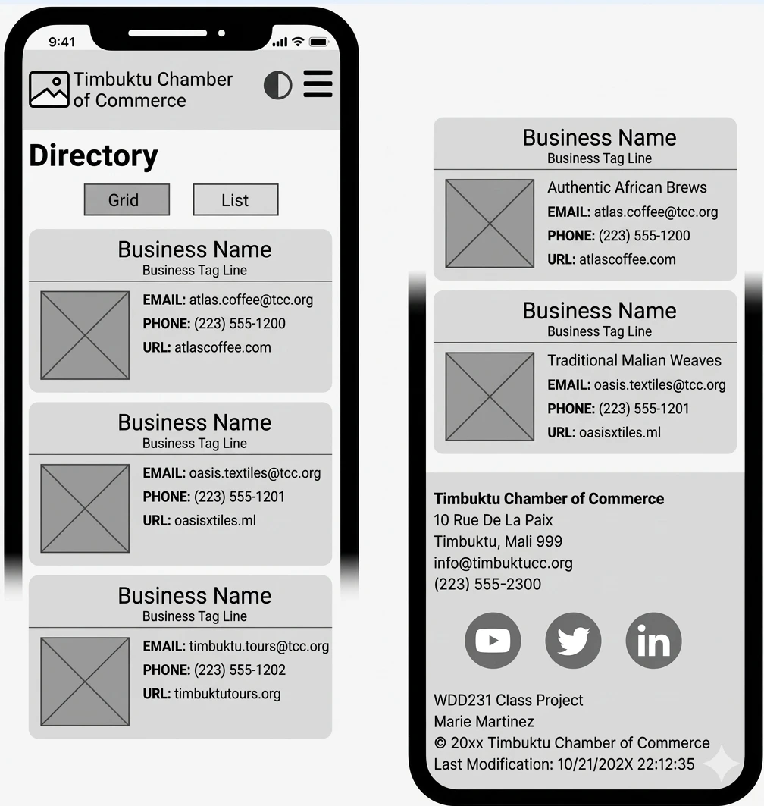

Kitale Chamber of Commerce Business Directory
1. Site Name
Kitale Chamber of Commerce
The name Kitale Chamber of Commerce was chosen because the website represents businesses and entrepreneurs in Kitale and the surrounding community. The name clearly identifies the location and purpose of the organization.
Optional Domain: www.kitalechamberofcommerce.co.ke
2. Site Purpose
The purpose of the Kitale Chamber of Commerce website is to provide a central online resource for businesses, entrepreneurs, residents, and visitors in Kitale.
The website will provide information about local businesses, Chamber activities, events, membership opportunities, and business resources. It will also help businesses increase their visibility and connect with other members of the local business community.
3. Target Market
The website is designed for people who are interested in business and economic activities in Kitale.
- Small business owners
- Entrepreneurs and startups
- Existing Chamber members
- People looking for local businesses and services
- Investors and potential business owners
- Residents and visitors in Kitale
4. Site Goals
- Increase visibility for businesses in Kitale.
- Provide a business directory where visitors can discover local businesses.
- Promote Chamber events, networking opportunities, and business activities.
- Encourage businesses and entrepreneurs to become Chamber members.
- Provide useful information and resources for the local business community.
- Connect businesses with customers and other businesses.
5. User Personas
Persona 1: Mary - Small Business Owner
Mary owns a small clothing and fashion business in Kitale. She wants to promote her business, find networking opportunities, and connect with other local business owners.
Persona 2: David - Entrepreneur
David is an entrepreneur planning to start a business in Kitale. He wants to learn about local business opportunities, Chamber membership, events, and useful business resources.
Persona 3: Amina - Local Resident
Amina lives in Kitale and wants to discover local businesses and services. She uses the business directory to find businesses near her and learn more about what they offer.
6. Scenarios
- How can I become a member of the Kitale Chamber of Commerce?
- Where can I find businesses and services in Kitale?
- What upcoming Chamber events and networking opportunities are available?
- How can I promote my business through the Chamber?
- What business resources are available for entrepreneurs in Kitale?
7. SEO Plan
Search engine optimization will help people searching for businesses and business resources in Kitale find the website.
Target Keywords
- Kitale Chamber of Commerce
- Businesses in Kitale
- Kitale business directory
- Kitale business events
- Kitale entrepreneurs
- Business networking in Kitale
SEO Strategies
- Use descriptive page titles.
- Write useful meta descriptions.
- Use meaningful headings and subheadings.
- Use descriptive image alt text.
- Use relevant keywords naturally throughout the website.
- Create descriptive and readable URLs.
- Use Open Graph metadata for social sharing.
- Provide useful and locally relevant content about Kitale.
8. Design Brief
The website will have a professional, modern, and welcoming appearance that represents the Kitale business community. The design will use strong visual hierarchy and responsive layouts so that the website works well on mobile phones, tablets, and desktop computers.
Color Schema
Deep Blue
#1C7CDB
Navigation, headings, buttons, and important sections.
Orange
#F76707
Highlights, calls to action, icons, and accents.
White
#FFFFFF
Backgrounds and areas that require a clean appearance.
Graphite
#212529
Body text and footer content.
Typography
| Font | Usage |
|---|---|
| Poppins | Headings, navigation, and important titles. |
| Open Sans | Body text, forms, lists, and general content. |
9. Site Map
-
Home
- Welcome / Hero Section
- Featured Businesses
- Upcoming Events
- Call to Action
-
Discover
- About Kitale
- Local Business Information
- Community Information
-
Directory
- Business Listings
- Business Categories
- Business Details
-
Join
- Membership Information
- Membership Benefits
- Membership Application
-
Contact
- Contact Information
- Contact Form
- Location
10. Wireframes
The wireframes show the planned layout of the Kitale Chamber of Commerce Business Directory page on both desktop and mobile devices. The design includes responsive navigation, a directory heading, grid and list view options, business cards, and a footer.
Desktop Wireframe

Mobile Wireframe
